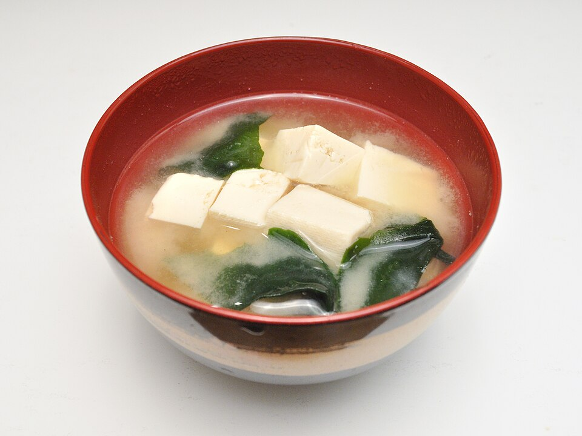

15 min · serves 3
Miso Soup with Tofu
Quick, light, and deeply satisfying. A good base for any meal table.
Ingredients
- 3 cups dashi
- 2 tbsp white or awase miso
- 150g silken tofu, cubed
- 1 tbsp dried wakame
- 2 scallions, sliced
Method
- Bring dashi to a gentle simmer.
- Add tofu and wakame; warm for 2 minutes.
- Dissolve miso in a ladle of broth, then return to pot.
- Do not boil after miso; finish with scallion.